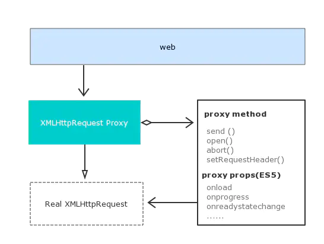
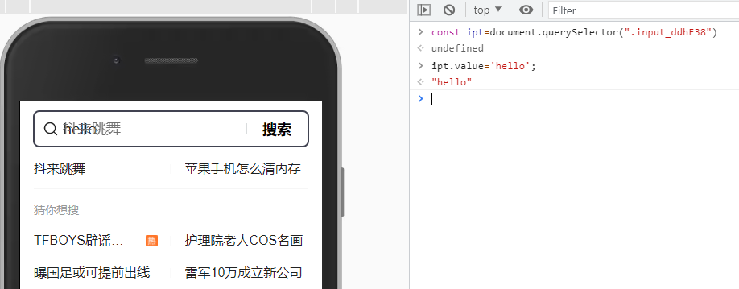
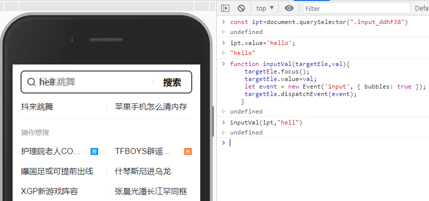
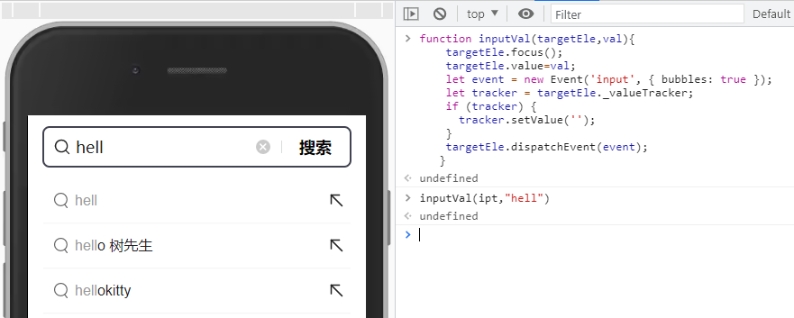

Electron实现自动化答题
概述
近日对某网站的自动答题（此处不细说，估计有人能猜到）试着做下自动化功能，经过多日研究，终于完整实现，下面记录下此过程中遇到的一些问题与解决方案。
思路
因为工作中一直再基于electron做开发，所以第一时间想到的就是electron，可以很方便的preload脚本。扒拉下答题网站，发现是用基于react开发的，进入页面后会请求一个接口，接口中包含题目与答案，拿到数据后渲染页面，前端比较用户提交的答案，很容易就可以想到下面的流程：
拦截接口数据 => 根据数据匹配出需要点击的选项 => 触发点击 => 提交
electron中对所有请求是可以做拦截的，但是却没有对返回内容做拦截的api。观察页面发现所有的请求都是基于XMLHttpRequest(XHR)对象来创建的，移动的Vconsole对请求的拦截也是通过改写全局的XMLHttpRequest（和Fetch）对象实现的，所以接下来，开始改写XMLHttpRequest内置对象。
请求拦截
github上其实有比较成熟的库来实现:Ajax-hook, 可以参考源码进行学习。

自动输入
完成请求拦截后，又遇到了另外一个坑，如何触发input标签的oninput监听？
为input标签赋值很简单：input.value='123'，但它只修改了input的value，并没有触发对应事件，我们拿头条的搜索为例（react构建）

我们需要做的不仅仅是赋值，还需要手动触发对应的事件，利用new Event来模拟input事件
function inputVal(targetEle,val){
targetEle.focus();
targetEle.value=val;
let event = new Event('input', { bubbles: true });
targetEle.dispatchEvent(event);
}
运行结果如下：

纳尼？？哪里不对？？，于是查阅资料发现有人提到过这个问题：js动态修改value，触发oninput事件的方法，再次修改函数
function inputVal(targetEle,val){
targetEle.focus();
targetEle.value=val;
let event = new Event('input', { bubbles: true });
let tracker = targetEle._valueTracker;
if (tracker) {
tracker.setValue('');
}
targetEle.dispatchEvent(event);
}
运行结果如下：

终于可以了！！！网上也有很多通过document.createEvent实现的例子，当然也可以实现，只不过官方不再推荐使用而已：MDN DOC-Document.createEvent:
function inputVal(targetEle,val){
console.log(targetEle)
targetEle.focus();
targetEle.value=val;
const event=document.createEvent('HTMLEvents');//createEvent=创建windows事件
event.initEvent('input', true, true);
let tracker = targetEle._valueTracker;
if (tracker) {
tracker.setValue('');
}
targetEle.dispatchEvent(event);
}
邮件通知
考虑到有时会发生一定概率的答案解析失败的情况，自动化脚本此时就会暂停运行，需要用户手动进行选择，我们总不能一直盯着看，那就失去自动化的意义了。最开始的想法是调用微信机器人给自己发一条微信消息，后来发现这些机器人很容易被官方封杀，那就用最原始的方案：发邮件，微信有QQ邮件提醒，收到邮件后手机还会收到相关提醒。这里我选用的是nodemailer，配置如下（需要先开启邮箱的POP3/SMTP服务）：
const nodemailer = require("nodemailer");
let transporter = nodemailer.createTransport({
host: "smtp.163.com",
port: 465,
secure: true, // true for 465, false for other ports
auth: { // 权限认证
user: 'xxx@163.com',
pass: 'xxx' //POP3/SMTP开启成功后的密钥
}
})
发消息的话调用下面的方法即可：
transporter.sendMail({
from: 'xxx@163.com', // 发邮件的账号
to: 'xxx@qq.com', // 收邮件的账号
subject: `【xx提醒】`, // 标题
html: `<html><p>xxx自动答题发生异常，异常原因：xxx<br>[来自nodemailer自动发送邮件]</p></html>` // 邮寄的内容
}, (err, info) => {
console.log(content)
if (!err) {
console.log('sendMail success')
}
})
总结
electron非常适合用来做一些网站自动化功能，期待一些更有趣的功能。